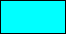

Color And Blending
This section deals with the functions related to color, alpha and blending.
GameMaker:Studio has a comprehensive selection of functions to manipulate the color, alpha and blending of what is drawn on the screen. Using these functions you can separate colors into
their component parts, create new colors, manipulate the draw alpha and also play with blend modes to change how different things in your game are drawn together. Apart from these functions, there
are also a number of constants that can be used as base colors in these (and other) functions:
| Constant | Color | Value |
|---|
| c_aqua |  | 16776960 |
| c_black |  | 0 |
| c_blue |  | 16711680 |
| c_dkgray |  | 4210752 |
| c_fuchsia |  | 16711935 |
| c_gray | | 8421504 |
| c_green |  | 32768 |
| c_lime |  | 65280 |
| c_ltgray |  | 12632256 |
| c_maroon |  | 128 |
| c_navy |  | 8388608 |
| c_olive |  | 32896 |
| c_orange | | 4235519 |
| c_purple |  | 8388736 |
| c_red |  | 255 |
| c_silver |  | 12632256 |
| c_teal |  | 8421376 |
| c_white | | 16777215 |
| c_yellow |  | 65535 |
Getting Color and Alpha Values
The following functions can be used to get the component hues, compound hue, saturation and luminosity of a selected color as well as the alpha and other properties:
- color_get_blue
- color_get_green
- color_get_red
- color_get_hue
- color_get_saturation
- color_get_value
- draw_getpixel
- draw_get_color
- draw_get_alpha
Creating Colors
These functions can be used to create colors from raw input values for color components:
- make_color_hsv
- make_color_rgb
- merge_color
Setting Color, Alpha and Blending
The following functions can be used to set the various different options for drawing to the screen, including alpha, color and blending:
- draw_clear
- draw_clear_alpha
- draw_set_alpha
- draw_set_color
- draw_set_color_write_enable
- draw_set_blend_mode
- draw_set_blend_mode_ext
- draw_set_alpha_test
- draw_set_alpha_test_ref_value
- draw_get_alpha_test
- draw_get_alpha_test_ref_value
- draw_enable_alphablend
© Copyright YoYo Games Ltd. 2013 All Rights Reserved